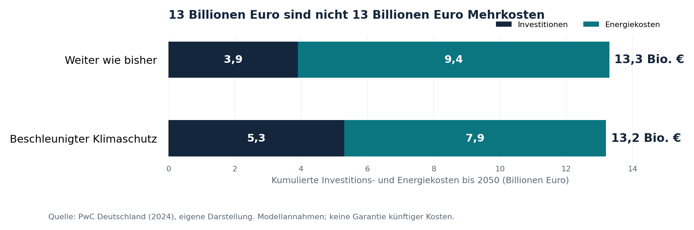
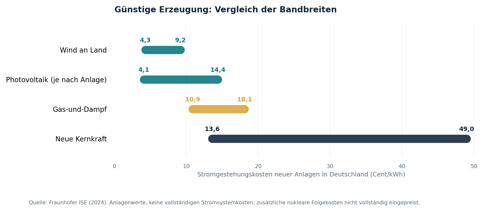

In diesem Beitrag
- 1. Zuerst die Interessen: Was für eine Organisation ist R21?
- 2. Die geopolitische Rechnung: Europa kauft Abhängigkeit, Amerika verkauft Energie
- 3. Die Billionen-Zahl: Warum die falsche Kostenfrage alles verzerrt
- 4. Die Physik hinter günstiger Energie: Energie ernten statt dauerhaft Brennstoff kaufen
- 5. Die behauptete Wirkungslosigkeit: Die Daten sagen etwas anderes
- 6. Blackouts, China und Emissionshandel: Drei reale Probleme, drei unzulässige Kurzschlüsse
- 7. Kernenergie und Fracking: Niedrige Emissionen allein genügen nicht
- 8. Was die herkömmliche Rechnung übersieht: die Wirkungsökonomie
- 9. Der publizistische Mechanismus: Aus einer Position wird ein Alarm
- 10. Die Prüfmatrix: Was R21 offenlegen müsste
- 11. Fazit: Die Zukunft wird nicht mit der billigsten Schlagzeile gebaut
- Redaktionelle Transparenz
- Quellen und Originaldokumente
Die entscheidende Frage lautet nicht, wie viel Geld wir in die Energiewende investieren. Sie lautet, was es uns kostet, weiterhin von fossilen Brennstoffen abhängig zu bleiben. Und sie lautet, wer an dieser Abhängigkeit verdient.
Bevor über Milliarden, Kernkraft und vermeintlich drohende Stromausfälle gestritten wird, muss der Absender des neuen Angriffs eingeordnet werden. Am 20. November 2026 veröffentlicht BILD unter einer existenziellen Alarmüberschrift Aussagen eines Expertenrats der Denkfabrik Republik 21 (R21). Die Schlagzeile ist maximal, die zugrunde liegende Kalkulation für die Öffentlichkeit bislang nicht nachprüfbar: Das angeblich exklusive vollständige Gutachten mit 10 bis 13,8 Billionen Euro ist zum Zeitpunkt dieser Analyse nicht öffentlich auffindbar. Bekannt sind der BILD-Artikel, die veröffentlichten R21-Positionen und ein ausführliches Kernenergie-Diskussionspapier vom Oktober 2026. Eine öffentliche Behauptung lässt sich prüfen. Eine nicht vorgelegte Modellrechnung lässt sich nicht seriös vollständig nachrechnen. [1][2][3][4]
Das ist kein nebensächlicher Vorbehalt. Ein Gutachten wird nicht dadurch belastbar, dass ein Medium es exklusiv besitzt, eine Professorenrunde es unterschreibt oder eine erschreckend große Zahl darin steht. Wissenschaftliche Nachvollziehbarkeit beginnt bei offen gelegten Daten, Szenarien und Annahmen. Genau dort setzt diese Analyse an.
1. Zuerst die Interessen: Was für eine Organisation ist R21?
Republik 21 versteht sich ausdrücklich als politische Denkfabrik für neue bürgerliche Politik. Ihr Klima-Expertenrat nennt die gewünschte Richtung selbst: weg von einer seiner Ansicht nach dirigistischen, nationalen Klimapolitik, hin zu einer globalen, technologieoffenen und stärker über Emissionshandel organisierten Steuerung. Das ist eine legitime politische Programmatik. Es ist aber keine neutrale Beschreibung dessen, was Wissenschaft alternativlos ergeben hätte. R21 erkennt in seinem Policy-Paper den menschengemachten Klimawandel ausdrücklich an. Die Organisation pauschal als Vereinigung von Klimawandelleugnern zu bezeichnen, wäre falsch. [2][3]
R21 hat zugleich nachweisbare parteipolitische und wirtschaftliche Berührungspunkte. Im Vorstand stehen der frühere CDU-Grundwertekommissionsvorsitzende Andreas Rödder und die frühere CDU-Bundesministerin Kristina Schröder. Der frühere R21-Geschäftsführer Martin Hagen wechselte 2026 in das Amt des FDP-Generalsekretärs. Recherchen von CORRECTIV dokumentierten den Wechsel eines früheren R21-Zuarbeiters, Nils Hesse, an die Spitze des Referats für Reden und strategische Kommunikation im Bundeswirtschaftsministerium. Er und R21 erklärten, die Tätigkeit für R21 sei beendet. Diese Information ist wichtig: personelle Verbindung ja, fortgesetzte Doppelrolle nicht belegt. [5][6]
Auch die Finanzierungsseite ist dokumentiert. Das Bundestags-Lobbyregister nennt für das Geschäftsjahr 2025 Schenkungen in einer Größenordnung von 590.001 bis 600.000 Euro. Frank Gotthardt wird mit einer projektbezogenen Spende von 40.001 bis 50.000 Euro genannt. Er ist zugleich als Geldgeber des Portals NIUS bekannt. Die Art des konkreten geförderten R21-Projekts bleibt aus diesem Registereintrag offen. Die Bundesregierung bestätigte zudem im Mai 2026 ausgezahlte Mittel an R21 von insgesamt 107.500 Euro für drei Projekte, darunter eines zu Klima- und Energiepolitik und eines zu transatlantischen Beziehungen. Aus diesen Tatsachen folgt keine Weisung für das aktuelle Gutachten. Sie widerlegen aber die Vorstellung einer vollständig losgelösten, ausschließlich wissenschaftlichen Expertenveranstaltung. [7][8]
Auch die öffentlich erklärte Rolle des Expertenratsvorsitzenden ist relevant: Joachim Weimann warb in einem eigenen LinkedIn-Beitrag ausdrücklich für politische Unterstützung von Bundeswirtschaftsministerin Katherina Reiche und rief zur Mobilisierung für einen energiepolitischen Kurswechsel auf. Damit tritt er nicht nur als wissenschaftlicher Beobachter auf, sondern auch als politischer Akteur. Das ist legitim, sollte bei der journalistischen Einordnung aber offen benannt werden. [23]
Auf der R21-Energiekonferenz vom 4. November 2026 traten neben Politikern, Wissenschaftlern und Stimmen unterschiedlicher Positionen auch Vertreter der Kernenergiebranche auf, darunter der Geschäftsführer von Westinghouse Electric Germany. Solche Gespräche sind selbstverständlich zulässig. Für die Einordnung eines Kernkraft-Ausbauprogramms ist jedoch relevant, dass der Hersteller von Reaktortechnik ein wirtschaftliches Interesse an neuen Kraftwerksprojekten hat. [9]
Das internationale Umfeld: Belegte Verbindungen, nicht erfundene Steuerung
Stefan Kooths gehört dem R21-Expertenrat an. Sein eigenes R21-Profil nennt ihn Vorsitzenden der Hayek-Gesellschaft und Mitglied der Mont Pèlerin Society. Am 17. November 2026 veröffentlichte R21 außerdem ein Gespräch mit Kristian Niemietz vom britischen Institute of Economic Affairs (IEA) über den Aufbau politischen Einflusses durch Thinktanks. Das IEA gehört zu den historischen Knotenpunkten internationaler marktwirtschaftlicher Thinktank-Vernetzung. [10][11]
Forschungen zu internationalen Atlas-Network-Organisationen und journalistische Recherchen dokumentieren, wie fossile Unternehmen in der Vergangenheit Teile dieses Umfelds gefördert haben und wie in mehreren Ländern Kampagnen gegen Klimapolitik betrieben wurden. Das Atlas Network ist kein Synonym für R21. Es gibt auf Grundlage der hier überprüften Quellen keinen Beleg, dass ExxonMobil, Koch-Unternehmen, das Heartland Institute oder Atlas das neue R21-Gutachten finanziert, beauftragt oder gesteuert haben. Eine ideologische Nähe ist noch kein Geldfluss. Die nachgewiesenen personellen, publizistischen und programmatischen Verbindungen sind allerdings ein guter Grund, Finanzierungs- und Interessentransparenz zu verlangen. [12][13]
Die faire Einordnung ist damit eindeutig: R21 ist eine programmatisch positionierte Denkfabrik mit dokumentierten politischen Kontakten, öffentlichen Mitteln und bekannten Spendern. Ihr Klima-Expertenrat sollte an seinen Rechnungen gemessen werden - nicht allein an seinen Titeln und auch nicht allein an seinen Kontakten.
2. Die geopolitische Rechnung: Europa kauft Abhängigkeit, Amerika verkauft Energie
Der ökonomische Interessenkonflikt ist konkret. Im Jahr 2025 kamen 58 Prozent der Flüssiggasimporte der EU aus den USA. Ein großer Teil der europäischen Gasversorgung hängt damit von einem ausländischen Lieferland und von globalen LNG-Märkten ab. Die EU hatte sich durch den Ausstieg aus russischen Gasimporten aus einer gefährlichen Abhängigkeit lösen müssen. Der Wechsel zu einem anderen dominanten Lieferanten ist kurzfristig eine wichtige Diversifizierung und zugleich langfristig keine vollständige Autonomie. [14][15]
Im gemeinsamen Handelsrahmen von August 2025 formulieren Washington und Brüssel eine Absicht, amerikanisches LNG, Öl und Kernenergieprodukte im erwarteten Wert von 750 Milliarden US-Dollar bis 2028 abzunehmen. Das ist kein schon abgewickelter Kaufvertrag. Die EU-Kommission stellt selbst klar, dass Unternehmen die konkreten Kaufentscheidungen treffen. Aber das strategische Ziel ist unmissverständlich: Die USA wollen einen sehr großen europäischen Absatzmarkt für ihre Energiewirtschaft sichern. [16]
Dauerhaft sinkende europäische Nachfrage nach importiertem Gas steht diesem amerikanischen Exportinteresse entgegen. Das ist kein Konjunktiv über eine unbekannte Absicht, sondern das Verhältnis von Angebot und Nachfrage. Weniger dauerhafte Nachfrage bedeutet ein kleinerer Markt. Das beweist nicht, dass sämtliche Entscheidungen Washingtons auf eine wirtschaftliche Schwächung Europas abzielen. Eine prosperierende EU ist auch für US-Unternehmen ein wichtiger Handelspartner. Die amerikanische Sicherheitsstrategie bezeichnet ein starkes Europa ausdrücklich als strategisches Interesse. Der Konflikt ist spezifischer: Europa gewinnt Souveränität durch eigene Erzeugung und geringere Brennstoffimporte; amerikanische Gasexporteure gewinnen durch langfristige fossile Abnahme. [17]
Die Nationale Sicherheitsstrategie der USA vom November 2025 formuliert zusätzlich politische Ziele: Sie fordert, Widerstand gegen Europas gegenwärtige Entwicklung innerhalb europäischer Staaten zu fördern und europäische Märkte für US-Produkte zu öffnen. Sie begrüßt den Einfluss politisch nahestehender europäischer Parteien. Das Dokument spricht gleichzeitig davon, dass Europa auf eigenen Füßen stehen solle. Diese beiden Aussagen gehören zusammen: Angestrebt wird ein Europa, das stärker nach amerikanischen strategischen Vorstellungen handelt. [17]
Project 2025 und tatsächliche Eingriffe
Die Heritage Foundation beschreibt im Energie-Kapitel von Project 2025 amerikanische „Energy Dominance“ als Ziel. Vorgesehen sind unter anderem die Stärkung von Öl- und Gasförderung, LNG-Exportmöglichkeiten und Kernenergie sowie die Rücknahme verschiedener klimapolitischer Instrumente. Nicht jede Position daraus deckt sich mit R21; besonders ein verbindlicher europäischer CO2-Preis unterscheidet R21 von Teilen der US-Programmatik. Die auffällige gemeinsame Priorisierung von fossiler Versorgung, Kernenergie und Deregulierung darf man aber sachlich benennen. Eine organisatorische Zusammenarbeit zwischen den Verfassern des aktuellen R21-Gutachtens und Project 2025 ist nicht belegt. [18][3]
Wie amerikanische Einflussnahme konkret aussieht, zeigt der Streit um die europäische Methanverordnung. Die US-Regierung forderte laut einem von Reuters ausgewerteten Dokument Ausnahmen für amerikanische fossile Exporte bis 2035. Gemeinsam mit weiteren Gasexporteuren drängte sie auf eine Lockerung der Anforderungen. Am 19. November 2026 verständigten sich EU-Parlament und Mitgliedstaaten politisch auf die zweijährige Verschiebung bestimmter Berichtspflichten. Die Vollendung des Gesetzgebungsverfahrens und das genaue Inkrafttreten sind davon zu unterscheiden. Hier lässt sich die Kette tatsächlich nachvollziehen: Wirtschaftsinteressen, diplomatischer Druck und eine europäische Regulierungsänderung im selben Politikfeld. Ein ausschließlicher Ursache-Wirkungs-Nachweis für den US-Druck ist das noch nicht; die EU nennt auch Versorgungssorgen und Marktverwerfungen. [19][20]
Ein zweiter politischer Kanal ist öffentlich belegt: US-Vizepräsident JD Vance traf im Februar 2025 AfD-Politikerin Alice Weidel und kritisierte die politische Abgrenzung gegenüber der AfD. Daraus folgt keine Verbindung zu R21 und nicht automatisch eine Energiepolitik-Kampagne. Es zeigt aber, dass Kontakte zu europäischen Parteien Bestandteil der öffentlich sichtbaren amerikanischen Außenpolitik sind. [21]
Ebenso wichtig ist das Gegenargument gegen eine überzogene Verschwörungserzählung: R21 fordert auch die Prüfung eigener deutscher Schiefergasförderung. Das würde amerikanische Gasimporte grundsätzlich teilweise ersetzen können. Diese Forderung passt gerade nicht zu der Behauptung, jede R21-Position diene amerikanischen LNG-Exporten. Interessen können sich überschneiden, ohne identisch zu sein. [22]
3. Die Billionen-Zahl: Warum die falsche Kostenfrage alles verzerrt
Der BILD-Artikel nennt 10 bis 13,8 Billionen Euro Kosten der Energiewende bis 2045. Eine solche Zahl wirkt gewaltig. Aber was wird addiert? Werden private und öffentliche Investitionen zusammengerechnet? Sind darin Strom, Wärme, Verkehr und Gebäude enthalten? Wird zwischen ohnehin anfallenden Ersatzinvestitionen und klimabedingten Mehrkosten unterschieden? Welche Energiepreise, Zinssätze und Brennstoffmengen werden unterstellt? Welche Schäden und Einsparungen stehen der Summe gegenüber? Die öffentliche Darstellung beantwortet das nicht. [1]
Schon der Verweis auf den Bundestag ist problematisch. Joachim Weimann verwendet in einem eigenen öffentlichen LinkedIn-Beitrag die Formulierung, die Wissenschaftlichen Dienste kämen auf Energiewendekosten von 10 bis 13 Billionen Euro. Das Original der Wissenschaftlichen Dienste vom 16. September 2024 ist aber keine eigene Kostenschätzung. Es fasst sehr unterschiedliche Veröffentlichungen zusammen, warnt vor methodischen Unsicherheiten und verweist für 13,3 Billionen Euro ausdrücklich auf eine PwC-Studie. [23][24]
Und diese PwC-Studie enthält den entscheidenden Vergleich: Im „Weiter wie bisher“-Szenario bis 2050 summieren sich betrachtete Investitions- und Energiekosten auf rund 13,3 Billionen Euro. Im Szenario beschleunigten Klimaschutzes summieren sie sich auf rund 13,2 Billionen Euro. Die klimaorientierte Variante investiert mehr zu Beginn und spart dafür langfristig Betrieb und Energie. Die Kostendifferenz ist innerhalb dieser Modellannahmen gering, nicht astronomisch. PwC hat damit nicht gezeigt, dass Klimaschutz 13,2 Billionen Euro zusätzlich kostet. [25]


Einen zweiten Blick liefert das Kopernikus-Projekt Ariadne. In seinen Szenarien von 2025 betragen die zusätzlichen gesamtwirtschaftlichen Kosten einer kosteneffizienten Transformation gegenüber bestehenden Politiken rund 16 bis 26 Milliarden Euro im Jahr, während die jährlichen Transformationsinvestitionen bei 116 bis 131 Milliarden Euro liegen. Auch dies ist eine modellbasierte Rechnung mit Annahmen und nicht die einzig wahre Zahl. Aber sie zeigt, wie massiv sich Bruttoinvestitionen und Netto-Mehrkosten unterscheiden. [26]
Für eine erweiterte Kosten-Nutzen-Bilanz gilt:
Zusätzliche Investitionen und Betriebskosten müssen den eingesparten Brennstoff- und sonstigen Betriebskosten sowie vermiedenen Schäden gegenübergestellt werden - über denselben Zeitraum und gegenüber demselben Referenzszenario. Nicht monetarisierbare gesellschaftliche und ökologische Veränderungen sind gesondert auszuweisen. Eine solche Bilanz ist noch keine Gesamtbewertung der Wirkung.
Steuerzahlungen, Investitionen und tatsächliche Ressourcenverbräuche dürfen dabei nicht wild addiert werden. CO2-Preise sind für Unternehmen Kosten, innerhalb der Volkswirtschaft aber zugleich Zahlungen mit Gegenbuchung. Netzentgelte enthalten Investitionen, die nicht ein zweites Mal als unabhängige Kostenposition gezählt werden dürfen. Auch der Zeitpunkt der Zahlung ist wichtig: Ein Euro heute ist nicht ohne Weiteres mit einem Euro im Jahr 2045 vergleichbar.
Eine Rechnung ohne ein konsistentes Vergleichsszenario ist keine Kosten-Nutzen-Analyse. Eine Billionensumme kann sachlich korrekt sein und als politische Aussage dennoch täuschen, wenn sie als „Preis der Energiewende“ ausgegeben wird, obwohl der größere Teil auch ohne Energiewende anfiele.
4. Die Physik hinter günstiger Energie: Energie ernten statt dauerhaft Brennstoff kaufen
Wind und Sonne haben einen einfachen, ökonomisch entscheidenden Vorteil: Sie stellen den primären Energiefluss bereit, ohne dass für jede erzeugte Kilowattstunde ein neuer fossiler oder nuklearer Brennstoff beschafft, transportiert, aufbereitet und eingesetzt werden muss. Eine Solar- oder Windanlage ist nach dem Bau nicht kostenlos. Finanzierung, Wartung, Wechselrichter, Repowering, Flächen, Netze und Entsorgung bleiben reale Kosten. Der größte variable Input - der Primärenergieträger selbst - hat jedoch keinen Einkaufspreis.
Das verändert die Kostenstruktur. Fossile Anlagen benötigen laufend Brennstoff, häufig mit langen Transportketten und geopolitischem Preisrisiko. Sie stoßen zudem CO2 und Schadstoffe aus. Kernkraftwerke benötigen deutlich weniger Brennstoffmasse als fossile Kraftwerke und emittieren im Betrieb sehr wenig CO2. Sie benötigen aber Brennstoffaufbereitung, besondere Sicherheits- und Infrastruktursysteme, hohe Finanzierung und langfristige Rückbau- und Entsorgungsleistungen. Ein einfacher physikalischer Satz ersetzt keine Vollkostenrechnung. Er erklärt jedoch, warum Wind und Solar nach ihrem technologischen Lernprozess so starke Kostenvorteile gewonnen haben.
Die Internationale Agentur für Erneuerbare Energien (IRENA) beziffert die weltweiten durchschnittlichen Stromgestehungskosten neu gebauter Anlagen 2025 auf 33 US-Dollar je Megawattstunde für Wind an Land und 44 US-Dollar für große Photovoltaik. Mehr als 90 Prozent der neu ans Netz gegangenen großen erneuerbaren Projekte erzeugten Strom unter den Kosten der günstigsten neuen fossilen Alternative ihres jeweiligen Marktes. Das ist ein robuster internationaler Befund. Er besagt nicht, dass jede einzelne Solaranlage überall billiger ist oder ein einzelner Windpark allein eine ganzjährige gesicherte Stromversorgung darstellt. [27]
Für Deutschland kommt Fraunhofer ISE in seiner Kostenstudie 2024 auf 4,3 bis 9,2 Cent je Kilowattstunde bei Wind an Land, 4,1 bis 14,4 Cent bei Photovoltaik je nach Bauart, 10,9 bis 18,1 Cent bei neuen Gas-und-Dampf-Kraftwerken und 13,6 bis 49,0 Cent bei neuen Kernkraftwerken. Bei neuen Kernkraftwerken sind Endlager- und weitere Folgekosten in dieser Rechnung nicht eingepreist. Die Kategorien sind Anlagen-Stromgestehungskosten, nicht Haushaltsstrompreise und nicht komplette Systemkosten. [28]


Ein technischer Einwand ist berechtigt: Wer bei Flaute oder Dunkelheit Strom benötigt, braucht Flexibilität. Deshalb gehören Batteriespeicher, Netze, steuerbare Nachfrage, europäischer Stromhandel und gesicherte Reserveleistung in eine umfassende Analyse. Die Internationale Energieagentur beschreibt Batteriespeicher als zunehmend wichtige und günstiger gewordene Flexibilitätsoption. Längere Dunkelflauten lassen sich nicht allein mit üblichen Kurzzeitspeichern bewältigen; dafür braucht es andere Bausteine, auch langfristige Speicher und zeitweise steuerbare Erzeugung. Wer so tut, als würden diese Kosten nicht existieren, rechnet zu optimistisch. Wer dieselben Systemanforderungen bei Kernkraft und Gas nicht bewertet, rechnet einseitig. [29]
Die OECD und die Nuklearenergieagentur weisen 2026 ihrerseits darauf hin, dass bestehende, langfristig betriebene Kernkraftwerke unter bestimmten Bedingungen kostengünstig Strom erzeugen können. Darum ist die Behauptung „Erneuerbare sind unter jeder denkbaren Bedingung günstiger als jede andere Technologie“ zu absolut. Für die praktisch relevante Frage neuer Erzeugungskapazitäten in Deutschland sprechen die verfügbaren Kostenvergleiche jedoch sehr deutlich für Wind- und Solarenergie. [30]
Vom Kraftwerkspreis zum Industriestrompreis
Ein Unternehmen interessiert sich nicht nur für die Stromgestehungskosten eines Kraftwerks. Es braucht einen verlässlichen, planbaren Strompreis über viele Jahre. Und zwar einschließlich Beschaffung, Netz, Steuern und Abgaben, Absicherung und Versorgungssicherheit.
Genau hier wird die Energieversorgung zur Wettbewerbsfrage. In europäischen Großhandelsmärkten setzen oft gasbetriebene Kraftwerke den Preis der zuletzt benötigten Kilowattstunde. Hohe Gaspreise können dadurch den Strommarkt verteuern, selbst wenn ein großer Teil des Stroms bereits aus günstigeren Anlagen stammt. Die OECD beschreibt dieses Problem ausdrücklich. Die IEA kommt in einem Szenario von 2026 zu dem Ergebnis, dass ein stärkerer Ausbau von Wind und Solar die durchschnittlichen Endkundenstrompreise der EU bis 2030 um knapp 20 Prozent gegenüber einem langsameren Ausbaupfad verringern kann, wenn Netze und Flexibilität mitwachsen. [31][32]
Für die Industrie ergibt sich daraus ein konkreter Standortvorteil: langfristige Lieferverträge (PPA), mehr direkte Erzeugung, intelligente Lastverschiebung, Speicher und ein effizienter europäischer Strommarkt können Abhängigkeiten von den Gaspreisspitzen vermindern. Die Wirtschaftsfrage lautet deshalb nicht „Wollen wir auf schöne Windräder verzichten?“, sondern „Woher bekommen Chemie, Stahl, Rechenzentren, Mittelstand und Haushalte langfristig kalkulierbare Kilowattstunden?“
Die KfW erinnert an eine übersehene Gegenrechnung: Deutschland gab seit 2008 durchschnittlich 81 Milliarden Euro jährlich für Importe fossiler Brennstoffe aus. Diese historischen Durchschnittsausgaben sind nicht eins zu eins durch Strom ersetzbar. Aber sie illustrieren die Größenordnung permanenter Mittelabflüsse, die mit sinkendem fossilem Verbrauch geringer werden. [33]
5. Die behauptete Wirkungslosigkeit: Die Daten sagen etwas anderes
R21 berichtete nach seiner Energiekonferenz am 4. November, Joachim Weimann habe die Energiewende zugespitzt als etwas beschrieben, bei dem man „nichts erreicht“ habe. Zur Einordnung verweist R21 auf den weiterhin hohen fossilen Anteil am gesamten Energiemix. Das ist eine relevante Kritik am langsamen Fortschritt in Wärme, Verkehr und Industrie. Die Aussage zum gesamten Ergebnis ist dennoch nicht mit den verfügbaren Wirkungsdaten vereinbar. [34]
2025 stammten 55,9 Prozent der öffentlichen Nettostromerzeugung Deutschlands aus erneuerbaren Quellen. Der Bruttoendenergieverbrauch war noch weit stärker fossil geprägt, der erneuerbare Anteil betrug vorläufig 23,8 Prozent. Diese beiden Kennzahlen messen unterschiedliche Dinge. Die Stärke des Ausbaus im Strombereich ist kein Beleg, dass die Wärme- und Verkehrswende bereits geschafft wären. Umgekehrt entwertet das langsamere Tempo außerhalb des Stromsektors nicht die bereits erzielten Wirkungen im Stromsystem. [35][36]
Das Umweltbundesamt beziffert für 2025 die Nettovermeidung von Treibhausgasen durch erneuerbare Energien auf rund 265 Millionen Tonnen CO2-Äquivalente. Das ist eine modellierte Wirkung gegenüber einer Referenzversorgung, keine direkt gemessene Masse. Die Emissionsminderung berücksichtigt wesentliche vorgelagerte Prozesse. Sie ist nicht null. Die Gesamtemissionen Deutschlands lagen 2025 rund 48 Prozent unter dem Stand von 1990. Diese Entwicklung hat mehrere Ursachen und darf nicht ausschließlich den Erneuerbaren zugeschrieben werden. [37][38]
Hinzu kommen Kosten, die in Stromrechnungen nicht vollständig auftauchen. Das Umweltbundesamt schätzt für 2024 die Umweltkosten aus Strom- und Wärmeerzeugung sowie Straßenverkehr in Deutschland auf knapp 285 Milliarden Euro. Darin sind etwa Klimafolgen und Luftschadstoffwirkungen modelliert. Diese Zahl ist keine unmittelbare Haushaltsausgabe, und sie lässt sich nicht simpel von einer Transformationskostenprognose subtrahieren. Sie zeigt jedoch, warum eine Bilanz ohne externe Schäden methodisch unvollständig bleibt. [39]
6. Blackouts, China und Emissionshandel: Drei reale Probleme, drei unzulässige Kurzschlüsse
Versorgungssicherheit: Risiko ist nicht gleich Prognose
Dunkelflauten sind technisch anspruchsvoll. Deshalb muss eine sichere Versorgung unter extremen Wetter- und Lastszenarien modelliert werden. Die Bundesnetzagentur erfasste für 2024 in Deutschland durchschnittlich 11,7 Minuten ungeplante Stromunterbrechung je Letztverbraucher. Das belegt eine bislang hohe Netzzuverlässigkeit; es beweist für sich allein nicht, dass ein künftiges, vollständig transformiertes System automatisch sicher sein wird. Es gibt also keinen fachlichen Grund, das Risiko kleinzureden - und ebenso wenig einen Beleg, aus dem Risiko einen bevorstehenden flächendeckenden Blackout abzuleiten. [40]
Ein robustes System braucht geografische Diversifikation, schnell regelbare Flexibilität, cyber- und wetterfeste Netze, Reservekapazität, Speicher und europäische Verbünde. Mehrere voneinander unabhängige kleine Erzeuger können lokale Resilienz stärken. Ein Netz mit vielen Einspeisern braucht gleichzeitig leistungsfähige digitale Steuerung. Dezentralität ersetzt Netze nicht, sondern verändert ihre Aufgaben.
China: Herstellung und Betrieb sind zwei unterschiedliche Abhängigkeiten
Die Abhängigkeit von chinesischen Produktionsketten bei Solarmodulen und Batterien ist real. Die IEA nennt für mehrere Stufen der Clean-Tech-Fertigung chinesische Kapazitätsanteile von 60 bis 85 Prozent. Europa braucht deshalb mehr eigene Zell-, Batterie-, Wechselrichter- und Recyclingkapazitäten, faire Handelsregeln sowie diversifizierte Rohstofflieferketten. [41]
Aber es ist ein fundamentaler Unterschied, ob ein technisches Produkt einmal beschafft wird und danach über viele Jahre Energie liefert, oder ob ein Kraftwerk fortlaufend Brennstoff importieren muss. Bei einer Solar- oder Windanlage lässt sich das Produktionsrisiko durch europäische Fertigung und Reparaturfähigkeit verringern. Beim fossilen Kraftwerk bleibt die Brennstoffnachfrage Teil des Betriebskonzepts. Die richtige Lehre aus China lautet deshalb nicht, wieder fossile Abhängigkeit aufzubauen, sondern die neue industrielle Wertschöpfung in Europa zu verankern.
Der Wasserbetteffekt: Die EU hat keine unveränderliche Zertifikatemenge
Der sogenannte Wasserbetteffekt beschreibt ein echtes Problem von Emissionshandelssystemen: Sinkt die Nachfrage nach Zertifikaten in einem Land, können unter bestimmten Bedingungen Emissionen an anderer Stelle stattfinden, solange die verfügbare Zertifikatemenge unverändert bleibt. Die Schlussfolgerung, der deutsche Kohleausstieg bringe deshalb klimatisch nichts, übersieht jedoch Reformen. Die Marktstabilitätsreserve entzieht seit Jahren Zertifikate; Deutschland hat zudem Zertifikate im Zusammenhang mit dem Kohleausstieg gelöscht. Die EU-Kommission dokumentiert die Regelung. Zugleich hat sie 2026 eine Änderung vorgeschlagen, welche die bisherige automatische Ungültigkeit bestimmter überschüssiger Zertifikate verändern würde. Gerade deshalb muss man jeweils die aktuelle Rechtslage und die Zahl der Zertifikate prüfen, statt den Wasserbetteffekt als zeitloses Naturgesetz zu präsentieren. [42][43]
7. Kernenergie und Fracking: Niedrige Emissionen allein genügen nicht
Kernkraft ist im Betrieb CO2-arm und kann viel regelbaren Strom erzeugen. Frankreich zeigt, dass ein hoher Kernenergieanteil mit einer geringen CO2-Intensität der Stromerzeugung vereinbar ist. Diese Tatsache gehört in jede sachliche Debatte. Sie begründet aber nicht automatisch den Neubau eines deutschen Atomkraftwerksprogramms.
Das im Oktober 2026 veröffentlichte R21-Papier von Anna Veronika Wendland entwirft ein Szenario mit rund 50 Gigawatt neuer Kernkraftwerksleistung und kalkuliert dafür beispielhaft rund 350 Milliarden Euro Baukosten. Die Rechnung setzt 7.000 Euro pro Kilowatt und Perspektiven auf standardisierten Serienbau voraus. Finanzierungskosten, Zeitrisiken, Bauindustrie, Personal, Rückbau und Langzeitentsorgung sind dabei gesondert zu prüfen. Die Autorin weist selbst auf die hohen Kosten westlicher Neubauprojekte hin und setzt auf künftig günstigeren Serienbau. Gerade diese Lern- und Kostensenkungsannahme ist die eigentliche Wette. [4]
Die Gegenprobe liefert die Realität neuer europäischer Großprojekte: Ein Bericht des britischen Public Accounts Committee vom 28. Oktober 2026 nennt für Sizewell C geschätzte Baukosten von 40,5 bis 47,7 Milliarden Pfund bei einem vorgesehenen vollständigen Betrieb ab 2039. Der Bericht warnt vor erheblichen Risiken für Steuerzahlende und Stromkunden. Andere Reaktoren und Länder sind nicht identisch; aber ein deutsches 50-Gigawatt-Programm kann diese Erfahrungswerte nicht einfach übergehen. [44]
Hinzu kommt ein systemischer Zielkonflikt: Ein kapitalintensives Kernkraftwerk muss für günstigen Strom möglichst viele Stunden laufen. Wind und Solar haben sehr niedrige Grenzkosten und erzeugen zeitweise viel Strom gleichzeitig. Je höher ihr Anteil, desto schwieriger kann die wirtschaftliche Auslastung neuer Grundlastkraftwerke werden. R21s Papier beantwortet diesen Konflikt mit der Forderung, den Kernenergieanteil auf mindestens rund 40 Prozent anzuheben. Das ist eine politisch-technische Auswahlentscheidung, nicht der Beweis, dass genau dieser Mix die volkswirtschaftlich günstigste Lösung ist. [4]
Fracking-Gas besitzt wiederum keine dauerhafte Klimaneutralität. Selbst bei technisch reduzierten Methanverlusten entstehen bei der Verbrennung CO2-Emissionen. CO2-Abscheidung und geologische Speicherung können in einzelnen schwer vermeidbaren Industrieprozessen sinnvoll sein. CCS ist aber nicht kostenlos und macht fossile Energie nicht automatisch emissionsfrei. Zum vollständigen Systemvergleich gehören Förderfolgen, Methanemissionen, Transport, Speicherüberwachung und die Opportunitätskosten einer Infrastruktur, deren Klimaverträglichkeit ständig nachgerüstet werden muss.
Für Deutschland entsteht daraus eine begründbare strategische Priorität: schnell realisierbare, kostengünstige erneuerbare Kapazitäten zuerst; parallel Netze, Speicher, Flexibilität, industrielle Effizienz und gesicherte Reserven. Ein Neubeginn der Kernenergie ist dafür nicht die zwingende Voraussetzung. Die stillgelegten deutschen Reaktoren, ihre Rückbauzustände und mögliche Sicherheitsnachrüstungen müssten unabhängig und standortbezogen beurteilt werden. Ein bloßer Abriss-Stopp schafft noch keinen wirtschaftlich einsatzbereiten Kraftwerkspark.
8. Was die herkömmliche Rechnung übersieht: die Wirkungsökonomie
Bisher betrachten die meisten Studien das Energiesystem von den Kosten der Anlagen oder den volkswirtschaftlichen Kosten der Transformation her. Die Wirkungsökonomie stellt eine weitergehende Frage: Was bewirkt das Energiesystem insgesamt - für Menschen, Unternehmen, demokratische Selbstbestimmung und künftige Generationen?
Wirkungen erster Ordnung sind unmittelbare Zustandsveränderungen, etwa bei Emissionen, Flächennutzung, finanzieller Belastung oder Beschäftigung. Die erzeugte Strommenge ist zunächst eine Leistung, noch kein Wirkungsnachweis. Messwerte brauchen eine Ausgangslage, einen Vergleich und eine begründete Zurechnung.
Mögliche Wirkungen zweiter Ordnung sind indirekte Folgen: niedrigere Brennstoffimporte, geringere lokale Schadstoffbelastung, neue Industriekompetenzen, veränderte Haushaltseinkommen, stabilere oder instabilere Wertschöpfungsketten, Flächenkonflikte und veränderte Energiearmut.
Mögliche Wirkungen dritter Ordnung verändern Regeln, Anreize und künftige Entscheidungsbedingungen: eine andere geopolitische Verhandlungsmacht Europas, weniger Verwundbarkeit durch externe Energieschocks, resilientere Gemeinden, neue Kompetenzen, andere Marktstrukturen und vor allem zusätzliche Handlungsspielräume kommender Generationen.
Eine rein auf die Zahl jährlicher Kilowattstunden fixierte Betrachtung verfehlt einen Teil dieser Wirkungen. Dasselbe gilt für den Marktpreis allein: Er misst nicht automatisch Luftqualität, Versorgungssouveränität, Biodiversität, demokratische Teilhabe und langfristige Risikovermeidung. Als globale Referenz dienen die Agenda 2030 und ihre 17 Nachhaltigkeitsziele; im deutschen Fall zusätzlich die Deutsche Nachhaltigkeitsstrategie. SDG+ ist die WÖk-eigene Konkretisierung und Ergänzung vorhandener UN-Bezüge, etwa für Demokratie, Transparenz, Resilienz, Kooperation und Technologieverantwortung. Ein Zielbezug allein ist kein Kausalitätsnachweis.
Ein T-SROI beziehungsweise eine wirkungsbezogene Scorecard kann helfen, Investitionen nicht nur nach privatem Gewinn, sondern nach überprüfbaren gesamtgesellschaftlichen Folgen zu bewerten. Wichtig ist dabei die Nicht-Kompensierbarkeit: Ein wirtschaftlicher Vorteil darf einen schwerwiegenden Verstoß gegen Grundrechte oder untragbare Umweltfolgen nicht einfach mathematisch „aufwiegen“. Für jede Wirkung braucht es nachvollziehbare Indikatoren, Systemgrenzen und Unsicherheitsangaben. Die Wirkungsökonomie ist keine Ausrede für hübsch klingende, unprüfbare Wirkungszahlen. Sie verlangt im Gegenteil besonders strenge Nachweise. Die Reverse Merit Order unterstützt dabei die Priorisierung materieller Defizite und begrenzt die Gesamtbewertung bei kritischen Schwächen. Ziel bleibt positive Netto-Wirkung unter nicht verrechenbaren Schutzgrenzen. Die beschriebenen indirekten und systemischen Pfade sind zunächst Potenziale und Risiken; ihre tatsächliche Realisierung und Zurechnung müssen gesondert geprüft werden.
Drei systemische Fehler, die die Energiedebatte immer wieder macht
Erster Fehler: Brutto statt netto. Neue Technik wird als neue Ausgabe behandelt. Der vermiedene alte Aufwand verschwindet aus der Erzählung. Das ist ökonomisch unvollständig.
Zweiter Fehler: Betrieb statt Lebenszyklus. Man betrachtet die laufenden Kosten einer Bestandsanlage, aber nicht ihren Neubau, die Finanzierung, die Versicherung und die Risiken am Ende der Lebensdauer. Oder man betrachtet die Erzeugung einer Windanlage, aber ignoriert Netze und Speicher. Beides verzerrt.
Dritter Fehler: Marktpreis statt Wirkung. Klimaschäden, Krankheit, Importe, Versorgungsrisiken und politische Handlungsfreiheit tauchen nur teilweise auf Rechnungen auf. Ein scheinbar günstiges System kann sehr teuer sein, wenn seine Schäden vergesellschaftet werden.
In dieser Perspektive bedeutet Vorsorgewohlstand, heute so zu investieren, dass morgen mehr Handlungsspielraum und weniger vermeidbare Lasten entstehen. Das Gegenteil ist Vorgriffswohlstand: Wir genießen heute Vorteile, während wir Energie-, Klima- und Folgekosten in die Zukunft verschieben. Der Unterschied ist keine moralische Dekoration. Er betrifft die wirtschaftliche Bilanz über Generationen.
9. Der publizistische Mechanismus: Aus einer Position wird ein Alarm
Eine Denkfabrik darf Zuspitzungen veröffentlichen. Ein Medium darf darüber berichten. Die journalistische Pflicht beginnt jedoch dort, wo eine positionierte Veröffentlichung als eindeutiges Expertenurteil präsentiert wird.
Im sichtbaren BILD-Artikel stehen ein existenzieller Alarm, eine schwer überprüfbare Billionenzahl, die Autorität des „Expertenrats“ und ein langer Forderungskatalog. Eine erkennbare unabhängige Methodendiskussion, eine Vergleichsrechnung mit dem fossilen Referenzsystem und eine ausführliche Stellungnahme anderer Energieforschungsinstitute fehlen in den vorliegenden Artikelseiten. Damit ist die öffentliche Darstellung einseitig. Das sagt noch nichts darüber aus, ob die Redaktion zusätzliche Quellen intern geprüft hat. [1]
Der Deutsche Presserat verlangt in Ziffer 2 des Pressekodex Sorgfalt bei der Wahrheitsprüfung und eine nicht verfälschende Überschrift. Das heißt nicht, dass jedes zugespitzte Zitat verboten ist. Bei der Behauptung eines drohenden wirtschaftlichen Zusammenbruchs sind aber besonders sorgfältige Einordnung, Quellenoffenlegung und Vergleichsmaßstäbe angezeigt. [45]
Hier kommt ein psychologischer Effekt hinzu. Der Illusory-Truth-Effekt beschreibt, dass wiederholte Aussagen als glaubwürdiger empfunden werden können, selbst wenn ihre faktische Grundlage nicht mitwächst. Eine Metaanalyse von 2026 mit 182 Studien belegt diesen Effekt, bei deutlichen Unterschieden zwischen Situationen. Deshalb ist die Reihenfolge journalistisch relevant: Erst Quelle, Kontext und Messmaßstab. Danach die Behauptung und die Prüfung. Nicht die alarmierende Formulierung ständig wiederholen und hoffen, dass eine Korrektur am Ende sie neutralisiert. [46]
Die konstruktive Alternative wäre klar gewesen: R21 transparent als politisch positionierte Denkfabrik beschreiben, das gesamte Gutachten verfügbar machen, die Bilanzmethode offenlegen, unabhängige Fachleute mit den gleichen Rechenannahmen konfrontieren und zwischen Bruttoinvestition, Mehrkosten, Systemkosten und Wohlfahrt unterscheiden. Medien sind keine neutralen Durchlauferhitzer für Positionspapiere. Sie sind für die Prüfung und Einordnung des von ihnen Veröffentlichten verantwortlich.
10. Die Prüfmatrix: Was R21 offenlegen müsste
- Das vollständige am 20. November 2026 zitierte Gutachten samt Anhang, Daten und Rechenmodell.
- Die genaue Definition der 10 bis 13,8 Billionen Euro: Bruttoausgaben, Systemkosten oder gesellschaftliche Netto-Mehrkosten?
- Einheitliche Vergleichsperioden: bis 2045, bis 2050 oder über die Lebensdauer der Anlagen?
- Die Kosten des Weiter-so-Szenarios inklusive Brennstoffimporte, Ersatzinvestitionen und Umweltfolgen.
- Die verwendeten Brennstoffpreis-, CO2-Preis- und Zinsannahmen sowie Sensitivitäten.
- Die Unterscheidung von Investitionen, Transfers und realem volkswirtschaftlichem Ressourcenverbrauch.
- Netz-, Speicher- und Flexibilitätskosten in allen verglichenen Szenarien, auch in Kernkraft- und Fossilszenarien.
- Die tatsächliche Verfügbarkeit stillgelegter AKW, ihre Sicherheitsnachrüstung und die Zeit bis zu einem möglichen Betrieb.
- Eine Finanzierungskalkulation für neue Reaktoren mit Verzögerungen, Rückbau, Abfall und Endlagern.
- Die berücksichtigten Lernkurven und Beschaffungsrisiken für Solar, Wind, Batterien, Kernkraft und Wasserstoff.
- Eine transparente CO2-Bilanz über komplette Wertschöpfungs- und Brennstoffketten.
- Eine konkrete Modellierung des EU-Emissionshandels einschließlich Marktstabilitätsreserve und nationaler Löschung.
- Eine geopolitische Importbilanz: Brennstoffströme im Vergleich zu einmaliger Technologie- und Rohstoffbeschaffung.
- Eine Auswertung von Verteilungswirkungen für Industrie, Haushalte und vulnerable Gruppen.
- Angaben zu Auftrag, Finanzierung, Mitautorenschaft und möglichen wirtschaftlichen Interessenkonflikten.
Solange diese Unterlagen fehlen, ist eine vollständige Widerlegung der heute angekündigten R21-Kalkulation nicht möglich. Sehr wohl überprüfbar sind jedoch die öffentliche Argumentation, die unzulässige Gleichsetzung großer Summen mit Wohlstandsverlusten und einzelne sachliche Kurzschlüsse. Die vorliegenden Energie-, Klima- und Kostenstudien liefern dafür eine breite Gegenbasis.
11. Fazit: Die Zukunft wird nicht mit der billigsten Schlagzeile gebaut
Die deutsche Energiewende ist nicht frei von Fehlern. Netzanschlüsse dauern zu lange. Speicher und flexible Nachfrage müssen schneller wachsen. Energieintensive Unternehmen brauchen planbare Preise. Die Herstellungsabhängigkeit von China ist ein industriepolitisches Problem. Politische Förderinstrumente müssen an überprüfbaren Ergebnissen gemessen werden. Wer diese Probleme verschweigt, schwächt die Transformation.
Aber die Korrektur ineffizienter Maßnahmen ist etwas anderes als die Rückkehr zu einer dauerhaft brennstoffabhängigen Energieversorgung. Wind und Sonne gehören nach den vorhandenen internationalen und deutschen Kostenstudien zu den günstigsten Formen neuer Stromerzeugung. Der fossile Betrieb verursacht wiederkehrende Beschaffungskosten und Preisrisiken. Eine gut geplante Elektrifizierung vermindert diese Abhängigkeit. Der notwendige Umbau erfordert Investitionen, aber er erzeugt zugleich Einsparungen, industrielle Möglichkeiten und vermiedene Schäden.
Die Nachhaltigkeitstransformation ist deshalb nicht bloß ein klimapolitischer Wunsch. Der Ausstieg aus einem System mit dauerhaft hohen Emissionen, importierten Brennstoffen und externalisierten Schäden ist eine ökonomische und ökologische Notwendigkeit. Über den optimalen Mix aus Erzeugung, Speicherung und Reserveleistung kann man fachlich streiten. Für Deutschland liefern die vorliegenden Fakten starke Gründe, Wind, Solar, Effizienz, Speicher und Netze zu priorisieren, statt ein neues großflächiges Kernkraftprogramm zum Dreh- und Angelpunkt zu machen.
Der entscheidende Maßstab ist der erzielte Nutzen für die gesamte Gesellschaft. Nicht die teuerste Investitionszahl. Nicht die lauteste Warnung. Nicht die Interessen einzelner Lieferländer oder Branchen. Sondern die langfristige Wirkung: bezahlbare Energie, leistungsfähige Unternehmen, weniger Umwelt- und Klimaschäden, demokratische Selbstbestimmung und ein Europa, das seine Energiezukunft selbst gestalten kann.
Nicht jeder Euro für Veränderung ist ein Verlust. Mancher Euro verhindert, dass wir noch Jahrzehnte für Abhängigkeit bezahlen.
Redaktionelle Transparenz
Diese Gegenanalyse bewertet Aussagen aus dem BILD-Artikel vom 20. November 2026 anhand der im Ausgangsmanuskript ausgewerteten Artikelfassung, öffentlich zugänglicher R21-Texte und unabhängiger Fachquellen. Bei der technischen Veröffentlichung war der vollständige BILD-Text nicht frei zugänglich; die Prüfung der vollständigen Artikelfassung kann deshalb hier nicht unabhängig bestätigt werden. Ein am Veröffentlichungstag angeblich exklusives, vollständiges neues R21-Gutachten war zum Redaktionsschluss nicht öffentlich zugänglich. Das R21-Kernenergiepapier von Oktober 2026 ist ein eigenständiges, öffentliches Dokument und wird nicht mit dem unveröffentlichten Gutachten gleichgesetzt. Modellvergleiche beruhen auf unterschiedlichen Definitionen und Zeiträumen; die in diesem Artikel genannten Zahlen dürfen deshalb nicht mechanisch miteinander verrechnet werden. Aussagen über belegte Kontakte und Finanzierungen begründen keine nicht dokumentierte gemeinsame Steuerung.
Quellen und Originaldokumente
[1] BILD / Oskar Luis Bender (20.11.2026): Experten warnen - Deutschland wird Energiewende „nicht überleben“. Quelle öffnen
[2] Republik 21: Expertenrat für Klima und Energie - Selbstdarstellung und Mitglieder. Quelle öffnen
[3] Republik 21: Policy-Paper des Expertenrats für Klima- und Energiepolitik. Quelle öffnen
[4] Anna Veronika Wendland / R21 (10/2026): Energiereform mit Kernenergie für Deutschland - Diskussionspapier. Quelle öffnen
[5] Republik 21: Leitung und Wechsel in der Geschäftsführung; R21-Mitteilungen. Quelle öffnen · Mitteilung zum Geschäftsführerwechsel
[6] CORRECTIV (10.06.2026): Von der rechten Denkfabrik ins Bundeswirtschaftsministerium. Quelle öffnen
[7] Deutscher Bundestag, Lobbyregister: Republik 21 e. V., Eintrag 2025 mit Angaben zu Zuwendungen. Quelle öffnen
[8] Deutscher Bundestag (2026): Bundestagsdrucksache 21/6164 - Förderdaten zu R21. Quelle öffnen (Antwort vom 26. Mai 2026, Frage 1, Druckseite 1: 23.880 + 21.750 + 61.870 = 107.500 Euro.)
[9] Republik 21 (11/2026): Programm der Energiekonferenz vom 4. November 2026. Quelle öffnen
[10] Republik 21: Stefan Kooths - Expertenprofil mit Hayek-Gesellschaft und Mont Pèlerin Society. Quelle öffnen
[11] Republik 21 (17.11.2026): Podcast zur Bedeutung von Thinktanks mit Kristian Niemietz (IEA). Quelle öffnen
[12] The Guardian (03.11.2025): Historische Dokumente zu ExxonMobil-Finanzierung und Atlas-Netzwerk. Quelle öffnen
[13] Wissenschaftliche Untersuchung: Atlas Network und transnationale Thinktank-Vernetzung. Quelle öffnen
[14] Europäische Kommission (2026): Liquefied Natural Gas - Einfuhranteile nach Herkunft. Quelle öffnen
[15] Stiftung Wissenschaft und Politik: Energie zwischen Markt und Geopolitik - der Fall LNG. Quelle öffnen
[16] EU-Kommission / USA (21.08.2025): Joint Statement on a framework for reciprocal, fair and balanced trade. Quelle öffnen
[17] The White House (2025): National Security Strategy of the United States of America. Quelle öffnen
[18] Heritage Foundation: Project 2025 - Mandate for Leadership, Chapter 12: Department of Energy. Quelle öffnen
[19] Reuters (15.12.2025, via Investing.com): US demands EU exempt its gas from methane emissions law. Quelle öffnen
[20] Reuters (19.11.2026): EU-Parlament und Mitgliedstaaten vereinbaren Aufschub bei Methanvorschriften. Quelle öffnen · Vorläufige Einigung im Original beim Rat der EU
[21] Reuters (14.02.2025): Vance meets with leader of German far-right AfD party. Quelle öffnen
[22] Republik 21 (2026): Analyse zur heimischen Schiefergasförderung. Quelle öffnen
[23] Joachim Weimann (2026), LinkedIn-Beitrag zur Unterstützung der Energiepolitik von Katherina Reiche und zur Kostenbehauptung. Quelle öffnen
[24] Wissenschaftliche Dienste des Bundestages (16.09.2024): Zur Berechnung der Investitionskosten für die Energiewende, WD 5 - 135/24. Quelle öffnen
[25] PwC Deutschland (2024): Klimaschutzinvestitionen lohnen sich - Modellvergleich der Gesamtkosten bis 2050. Quelle öffnen
[26] Kopernikus-Projekt Ariadne (2025): Szenarien zur Klimaneutralität 2045 - Transformationskosten und Investitionsbedarf. Quelle öffnen
[27] IRENA (07/2026): Renewable Power Generation Costs in 2025. Quelle öffnen
[28] Fraunhofer ISE (2024): Stromgestehungskosten Erneuerbare Energien - deutsche Technologievergleiche. Quelle öffnen · Studie von 2024 direkt öffnen
[29] International Energy Agency (2026): Electricity 2026 - Flexibility. Quelle öffnen
[30] OECD Nuclear Energy Agency (2026): The Costs of Generating Electricity 2025. Quelle öffnen
[31] OECD (2025): Economic Surveys EU and Euro Area - Strengthening electricity markets. Quelle öffnen
[32] International Energy Agency (2026): Affordable electricity is essential for EU electrification. Quelle öffnen
[33] KfW Research (2025): Deutschlands fossile Energieimporte - Größenordnung und Abhängigkeiten. Quelle öffnen
[34] Republik 21 (06.11.2026): Wohlstand braucht Energie - Rückblick auf die R21-Energiekonferenz. Quelle öffnen
[35] Fraunhofer ISE (01/2026): Öffentliche Nettostromerzeugung Deutschlands 2025. Quelle öffnen
[36] Umweltbundesamt (2026): Erneuerbare Energien in Deutschland - vorläufige Daten 2025. Quelle öffnen
[37] Umweltbundesamt: Durch erneuerbare Energien vermiedene Treibhausgasemissionen. Quelle öffnen
[38] Umweltbundesamt: Treibhausgasemissionen in Deutschland - Zeitreihen bis 2025. Quelle öffnen
[39] Umweltbundesamt (2026): Umweltkosten von Energie und Straßenverkehr - 2024. Quelle öffnen
[40] Bundesnetzagentur (2025): Versorgungsunterbrechungen Strom - SAIDI 2024. Quelle öffnen · Historische Mitteilung zu 2024
[41] International Energy Agency (2026): Strengthening supply chains for key energy technologies. Quelle öffnen
[42] EU-Kommission (2026): EU ETS Market Stability Reserve - Regeln und Reformvorschlag. Quelle öffnen
[43] Umweltbundesamt (2025): Deutschland löscht über 500.000 Emissionsberechtigungen. Quelle öffnen
[44] UK House of Commons Public Accounts Committee (28.10.2026): Sizewell C - project costs and schedule. Quelle öffnen
[45] Deutscher Presserat: Pressekodex, Ziffer 2 (Sorgfalt). Quelle öffnen
[46] Ye et al. (2026), Nature Communications: Systematic review and meta-analysis of the illusory truth effect. Quelle öffnen
Weiter: Zum Einstieg in die Wirkungsökonomie, zur Wirkungssteuer und zum führenden Begriffsleitfaden.